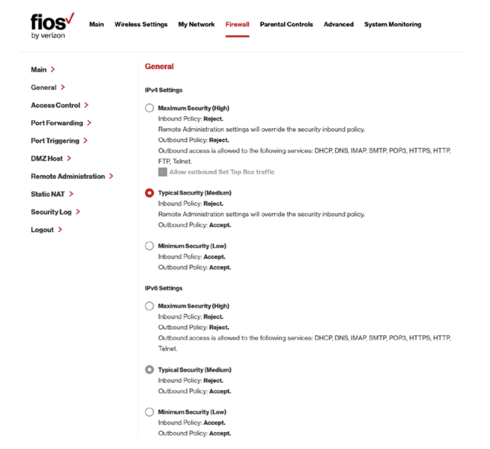

Please take help from an adult (parent or family member) to explore your home internet firewall settings. Based on your router & configurations, the steps may vary.
The following are the steps for Verizon Fios Router:
In the browser open myfiosgateway.com or 192.168.1.1
Enter Admin password & click Next. (Check sticker on the side of your router for administrator password)
Don't change any settings & Click Continue
Click Apply
Click main router settings

Firewall Settings
Click Firewall link at the top, and explore settings.